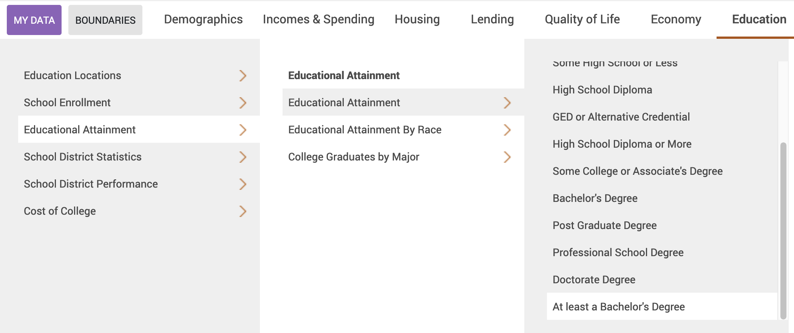
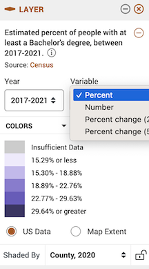
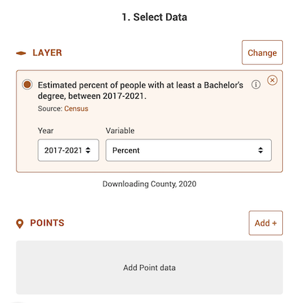

Lab 3: Working with the U.S. Census
CRD 150 - Quantitative Methods in Community Research
Professor Noli Brazil
April 13, 2022
In this guide you will learn how to download, clean and manage United States Census data using R. You will be working with data on U.S. counties. The objectives of the guide are as follows.
- Download Census data using their API
- Download Census data using PolicyMap
- Learn more data wrangling functions
This lab guide follows closely and supplements the material presented in Chapters 3, 9-10, and 14 in the textbook R for Data Science (RDS) and the class Handouts 2 and 3.
Assignment 3 is due by 2:00 pm, April 20 on Canvas. See here for assignment guidelines. You must submit an .Rmd file and its associated .html file. Name the files: yourLastName_firstInitial_asgn03. For example: brazil_n_asgn03.
Open up a R Markdown file
Download the Lab template into an appropriate folder on your hard drive (preferably, a folder named ‘Lab 3’), open it in R Studio, and type and run your code there. The template is also located on Canvas under Files. Change the title (“Lab 3”) and insert your name and date. Don’t change anything else inside the YAML (the stuff at the top in between the ---). Also keep the grey chunk after the YAML. For a rundown on the use of R Markdown, see the assignment guidelines
Installing Packages
As described in Lab 2, many functions are part of packages that are not preinstalled into R. In Lab 2, we had to install the package tidyverse. In this lab, you’ll need to install the package tidycensus, which contains all the functions needed to download Census data using the Census API. We’ll also need to install the package VIM, which provides functions for summarizing missingness in our dataset (a concept covered in Handout 2). Run the following code to install these packages.
install.packages("tidycensus")
install.packages("VIM")Run the above code directly in your console, not in your R Markdown. You only need to install packages once. Never more.
Loading Packages
Installing a package does not mean its functions are accessible during a given R session. You’ll need to load packages using the function library(). Unlike installing, you need to use library() every time you start an R session, so it should be in your R Markdown file. A good practice is to load all the packages you will be using in a given R Markdown at the top of the file. Let’s load the packages we’ll be using in this lab.
library(tidyverse)
library(tidycensus)
library(VIM)Downloading Census Data
There are two ways to bring Census data into R: Downloading from an online source and using the Census API.
Downloading from an online source
The first way to obtain Census data is to download them directly from the web onto your hard drive. There are several websites where you can download Census data including Social Explorer, National Historical Geographic Information System (NHGIS), and data.census.gov. The site we’ll use in this lab is PolicyMap.
UC Davis provides full access to all PolicyMap tools for staff, students, and faculty. You can access the full site only if you are on campus or logged onto the UC Davis VPN Client. Download the PulseSecure VPN app using the directions outlined here.The following sections provide step-by-step instructions for downloading data from PolicyMap and reading it into R. We will be downloading the percent of residents with a bachelor’s degree in California counties from the 2015-2019 American Community Survey.
- Navigate to the UC Davis PolicyMap portal. If you get a message telling you about the new PolicyMap website, just click on OK. You should see a webpage that looks like the figure below. Note the UC Davis logo on the top right. Go Aggies!

- You should see a Location search bar somewhere near the top of the page. Type in “California” in the search bar and California (State) should pop up as the first selection. Click it.

You should get a map that highlights California’s boundaries.

- The map does not show any data. Let’s add the percent of residents with a bachelor’s degree in California counties. Click on the Education tab, followed by Educational Attainment and then At least a Bachelor’s Degree.

Now your map should look like the following

- Notice in the legend window you can change various aspects of the variable, including the year

the data type

and the geographic level.

Leave the defaults (Year: 2015-2019, Variable: Percent, and Shaded by: County, 2010). County, 2010 indicates that you want to show the data by county using 2010 county boundaries.
Let’s download these data. At the top right of the site, click on the download icon
 .
.A window should pop up. The first screen asks you what data to download - it should be “Estimated percent of people with at least a Bachelor’s degree, between 2015-2019” under Layer. Click on the Next, Select Location button

- The next screen asks you to select a location. It should be California (State) and Shaded by County under the header Pre-Defined Location. Click on Next, Confirm Download.

The next screen asks you to confirm the download - just click on Download CSV

After a minute or two, a screen like below (on a Mac laptop) should pop up (the file name will differ from yours).

Save the file into an appropriate folder, such as below (Mac laptop)

- Let’s bring the csv file into R. We covered how to read in data into R in Lab 2. Make sure your working directory is pointed to the folder containing the file. Then read in the file using the function
read_csv().
ca.pm <- read_csv("TYPE THE FILE NAME HERE WITH CSV EXTENSION")If you’re having trouble downloading the file from PolicyMap, I uploaded it onto GitHub. Read it in using the following code.
ca.pm <- read_csv("https://raw.githubusercontent.com/crd150/data/master/PolicyMap%20Data%202021-01-20%201623UTC.csv")When you bring in a dataset, the first thing you should always do is view it just to make sure you got what you expected. You can do this directly in the console by using the function glimpse(), which we covered in Lab 2.
glimpse(ca.pm)## Rows: 64
## Columns: 4
## $ County <chr> "Sa…
## $ `FIPS Code` <chr> "06…
## $ `Formatted FIPS` <chr> "=\…
## $ `Estimated percent of people with at least a Bachelor's degree, b` <dbl> 20.…Using the Census API
You can bring data directly into R using the Census Application Program Interface (API). An API allows for direct requests for data in machine-readable form. That is, rather than having to navigate to a website using a browser, scroll around to find a dataset, download that dataset once you find it, save that data onto your hard drive, and then bring the data into R, you just tell R to retrieve data directly using one or two lines of code.
In order to directly download data from the Census API, you need a key. You can sign up for a free key here, which you should have already done before the lab. Type your key in quotes using the census_api_key() command
census_api_key("YOUR API KEY GOES HERE", install = TRUE)The parameter install = TRUE tells R to use this API key in the future so you won’t have to use census_api_key() again unless you update or re-download R.
The function for downloading American Community Survey (ACS) Census data is get_acs(). The command for downloading decennial Census data is get_decennial(). Getting variables using the Census API requires knowing the variable ID - and there are thousands of variables (and thus thousands of IDs) across the different Census files. To rapidly search for variables, use the commands load_variables() and View(). Because we’ll be using the ACS in this guide, let’s check the variables in the most recent 5-year ACS (2015-2019) using the following commands.
v19 <- load_variables(2019, "acs5", cache = TRUE)
View(v19)A window should have popped up showing you a record layout of the 2015-19 ACS. To search for specific data, select “Filter” located at the top left of this window and use the search boxes that pop up. For example, type in “Hispanic” in the box under “Label”. You should see near the top of the list the first set of variables we’ll want to download - race/ethnicity. Another way of finding variable names is to search them using Social Explorer. Click on the appropriate survey data year and then “American Community Survey Tables”, which will take you to a list of variables with their Census IDs.
Let’s extract race/ethnicity data and total population for California counties using the get_acs() command
ca <- get_acs(geography = "county",
year = 2019,
variables = c(tpopr = "B03002_001",
nhwhite = "B03002_003", nhblk = "B03002_004",
nhasn = "B03002_006", hisp = "B03002_012"),
state = "CA",
survey = "acs5",
output = "wide")In the above code, we specified the following arguments
geography: The level of geography we want the data in; in our case, the county. Other geographic options can be found here.year: The end year of the data (because we want 2015-2019, we use 2019).variables: The variables we want to bring in as specified in a vector you create using the functionc(). Note that we created variable names of our own (e.g. “nhwhite”) and we put the ACS IDs in quotes (“B03002_003”). Had we not done this, the variable names will come in as they are named in the ACS, which are not very descriptive.state: We can filter the counties to those in a specific state. Here it is “CA” for California. If we don’t specify this, we get all counties in the United States.survey: The specific Census survey were extracting data from. We want data from the 5-year American Community Survey, so we specify “acs5”. The ACS comes in 1- and 5-year varieties.
output: The argument tells R to return a wide dataset as opposed to a long dataset (we covered long vs. wide data in Handout 2)
Type in ? get_acs() to see the full list of options.
What does our data set look like? Take a glimpse().
glimpse(ca)## Rows: 58
## Columns: 12
## $ GEOID <chr> "06047", "06043", "06049", "06013", "06027", "06099", "06083"…
## $ NAME <chr> "Merced County, California", "Mariposa County, California", "…
## $ tpoprE <dbl> 271382, 17420, 8907, 1142251, 17977, 543194, 444829, 63912, 1…
## $ tpoprM <dbl> NA, NA, NA, NA, NA, NA, NA, NA, NA, NA, NA, NA, NA, NA, NA, N…
## $ nhwhiteE <dbl> 75037, 13935, 6920, 500592, 11173, 227369, 197993, 43679, 930…
## $ nhwhiteM <dbl> 140, 56, 6, 537, 33, 248, 222, 15, 148, 52, 1010, 230, 208, 4…
## $ nhblkE <dbl> 7812, 253, 136, 95892, 141, 15311, 8409, 472, 59, 454, 144695…
## $ nhblkM <dbl> 432, 51, 26, 1240, 39, 489, 418, 40, 70, 80, 1853, 162, 335, …
## $ nhasnE <dbl> 19650, 210, 99, 188237, 325, 29284, 23882, 967, 363, 1754, 23…
## $ nhasnM <dbl> 528, 91, 119, 1851, 80, 860, 548, 130, 257, 172, 2024, 452, 5…
## $ hispE <dbl> 161814, 1963, 1291, 292298, 4020, 251259, 201837, 15958, 3865…
## $ hispM <dbl> NA, NA, NA, NA, NA, NA, NA, NA, NA, NA, NA, NA, NA, NA, NA, N…The tibble contains counties with their estimates for race/ethnicity. These variables end with the letter “E”. It also contains the margins of error for each estimate. These variables end with the letter “M”. Although important to evaluate (we covered margins of error in Handout 3), we won’t be using the margins of error much in this class.
Data Wrangling
The ultimate goal is to merge the files ca and ca.pm together. To get there, we have to do a bit of data wrangling. We covered many data wrangling functions in Lab 2. We will revisit some of those functions and introduce a few more.
Slice
Let’s first lean up ca.pm. The first issue with ca.pm is the footnotes located at the bottom of the file. In excel, the footnotes look like

When you brought the file into R, the footnotes look like

To remove the footnotes, use the function slice()
ca.pm <- ca.pm %>%
slice(1:58)The function keeps all rows from 1 to 58. Row 59 is where the footnotes begin. Make sure you look at the data (View(ca.pm)) to make sure the slice went as you expected.
Renaming variables
You will likely encounter a variable with a name that is not descriptive. Or too long. Although you should have a codebook to crosswalk variable names with descriptions, the more descriptive the names, the more efficient your analysis will be and the less likely you are going to make a mistake. Use the command rename() to - what else? - rename a variable!
First, let’s look at the ca.pm’s column names by using the function names()
names(ca.pm)## [1] "County"
## [2] "FIPS Code"
## [3] "Formatted FIPS"
## [4] "Estimated percent of people with at least a Bachelor's degree, b"The variable Estimated percent of people with at least a Bachelor’s degree, b contains the percent of residents with a college degree or higher. Let’s shorten the name because we would not want to have to type this long name out everytime we want to refer to this variable. Make the name simple and clear. Here, we name it pcol.
ca.pm <- ca.pm %>%
rename(pcol = "Estimated percent of people with at least a Bachelor's degree, b")
names(ca.pm)## [1] "County" "FIPS Code" "Formatted FIPS" "pcol"Note the use of quotes around the variable name you are renaming.
Joining tables
Our next goal is to merge together the datasets ca.pm and ca. Handout 2 (pg. 8 and Figure 6) describes the process of merging datasets. Remember from Handout 3 that the unique Census ID for a county combines the county ID with the state ID. We have this ID as the single variable GEOID in ca and FIPS Code in ca.pm

To merge the two datasets together, use the function left_join(), which matches pairs of observations whenever their keys or IDs are equal. We match on the variables GEOID and FIPS Code and save the merged data set into a new object called cacounty.
cacounty <- left_join(ca, ca.pm, by = c("GEOID" = "FIPS Code"))We want to merge ca.pm into ca, so that’s why the sequence is ca, ca.pm. The argument by tells R which variables to match rows on, in this case GEOID in ca and FIPS Code in ca.pm. The number of columns in cacounty equals the number of columns in ca plus the number of columns in ca.pm minus the ID variable you merged on. Check cacounty to make sure the merge went as you expected.
glimpse(cacounty)## Rows: 58
## Columns: 15
## $ GEOID <chr> "06047", "06043", "06049", "06013", "06027", "06099",…
## $ NAME <chr> "Merced County, California", "Mariposa County, Califo…
## $ tpoprE <dbl> 271382, 17420, 8907, 1142251, 17977, 543194, 444829, …
## $ tpoprM <dbl> NA, NA, NA, NA, NA, NA, NA, NA, NA, NA, NA, NA, NA, N…
## $ nhwhiteE <dbl> 75037, 13935, 6920, 500592, 11173, 227369, 197993, 43…
## $ nhwhiteM <dbl> 140, 56, 6, 537, 33, 248, 222, 15, 148, 52, 1010, 230…
## $ nhblkE <dbl> 7812, 253, 136, 95892, 141, 15311, 8409, 472, 59, 454…
## $ nhblkM <dbl> 432, 51, 26, 1240, 39, 489, 418, 40, 70, 80, 1853, 16…
## $ nhasnE <dbl> 19650, 210, 99, 188237, 325, 29284, 23882, 967, 363, …
## $ nhasnM <dbl> 528, 91, 119, 1851, 80, 860, 548, 130, 257, 172, 2024…
## $ hispE <dbl> 161814, 1963, 1291, 292298, 4020, 251259, 201837, 159…
## $ hispM <dbl> NA, NA, NA, NA, NA, NA, NA, NA, NA, NA, NA, NA, NA, N…
## $ County <chr> "Merced", "Mariposa", "Modoc", "Contra Costa", "Inyo"…
## $ `Formatted FIPS` <chr> "=\"06047\"", "=\"06043\"", "=\"06049\"", "=\"06013\"…
## $ pcol <dbl> 13.79, 24.56, 15.19, 42.35, 27.17, 17.07, 34.16, 15.6…Note that if you have two variables with the same name in both files, R will attach a .x to the variable name in ca and a .y to the variable name in ca.pm. For example, if you have a variable named Charlotte in both files, cacounty will contain both variables and name it Charlotte.x (the variable in ca) and Charlotte.y (the variable in ca.pm). Try to avoid having variables with the same names in the two files you want to merge.
There are other types of joins, which you can read more about in Chapter 10 of RDS.
Creating new variables
As we covered in Lab 2, we use the function mutate() to create new variables in a data frame. Here, we need to calculate the percentage of residents by race/ethnicity. The race/ethnicity counts end with the letter “E”. Remember, we want variable names that are short and clear.
cacounty <- cacounty %>%
mutate(pwhite = 100*(nhwhiteE/tpoprE),
pblack = 100*(nhblkE/tpoprE),
pasian = 100*(nhasnE/tpoprE),
phisp = 100*(hispE/tpoprE))We multiply each race/ethnic proportion by 100 to convert the values into percentages.
Selecting variables
As we covered in Lab 2, we use the function select() to keep or discard variables from a data frame. Let’s keep the ID variable GEOID, the name of the county NAME, total population tpopr, percent college graduates pcol, and all the percent race/ethnicity variables. Save the changes back into caccounty.
cacounty <- cacounty %>%
select(GEOID, NAME, tpoprE, pcol, pwhite, pblack, pasian, phisp)Just to verify we got it right, check cacounty’s column names
names(cacounty)## [1] "GEOID" "NAME" "tpoprE" "pcol" "pwhite" "pblack" "pasian" "phisp"There are many other tidyverse data wrangling functions that we have not covered. To learn about them and for a succinct summary of the functions we have covered in the last two labs, check out RStudio’s Data Wrangling cheat sheet.
Missing data
A special value used across all data types is NA. The value NA indicates a missing value (stands for “Not Available”). Properly treating missing values is very important. The first question to ask when they appear is whether they should be missing in the first place. Or did you make a mistake when data wrangling? If so, fix the mistake, dude. If they should be missing, the second question becomes how to treat them. Can they be ignored? Should the records with NAs be removed? We briefly covered missing data in Handout 2.
Numerics also use other special values to handle problematic values after division. R spits out -Inf and Inf when dividing a negative and positive value by 0, respectively, and NaN when dividing 0 by 0.
-1/0## [1] -Inf1/0## [1] Inf0/0## [1] NaNYou will likely encounter NA, Inf, and NaN values, even in already relatively clean datasets like those produced by the Census. The first step you should take is to determine if you have missing values in your dataset. There are two ways of doing this. First, you can run the function aggr(), which is in the VIM package. Run the aggr() function as follows
summary(aggr(ca.pm))
##
## Missings per variable:
## Variable Count
## County 0
## FIPS Code 0
## Formatted FIPS 0
## pcol 0
##
## Missings in combinations of variables:
## Combinations Count Percent
## 0:0:0:0 58 100The results show two tables and two plots. The left-hand side plot shows the proportion of cases that are missing values for each variable in the data set. The right-hand side plot shows which combinations of variables are missing. The first table shows the number of cases that are missing values for each variable in the data set. The second table shows the percent of cases missing values based on combinations of variables. The results show that we have no missing values. Hooray!
We can also check missingness using the summary() function.
summary(cacounty)## GEOID NAME tpoprE pcol
## Length:58 Length:58 Min. : 1039 Min. :12.95
## Class :character Class :character 1st Qu.: 47647 1st Qu.:17.29
## Mode :character Mode :character Median : 184632 Median :24.07
## Mean : 677302 Mean :27.29
## 3rd Qu.: 692751 3rd Qu.:35.17
## Max. :10081570 Max. :59.49
## pwhite pblack pasian phisp
## Min. :10.64 Min. : 0.06579 Min. : 0.000 Min. : 7.299
## 1st Qu.:35.31 1st Qu.: 1.03318 1st Qu.: 1.614 1st Qu.:14.680
## Median :51.95 Median : 1.82224 Median : 4.236 Median :25.531
## Mean :53.74 Mean : 2.98417 Mean : 7.307 Mean :30.622
## 3rd Qu.:71.77 3rd Qu.: 3.32593 3rd Qu.: 7.867 3rd Qu.:44.700
## Max. :87.57 Max. :13.50115 Max. :36.280 Max. :84.212The summary provides the minimum, 25th percentile, median, mean, 75th percentile and maximum for each numeric variable. It will also indicate the number of observations missing values for each variable, which is none in our case.
We were fortunate to have no missing data. However, in many situations, missing data will be present. Check the PolicyMap guide located here to see how to deal with missingness in PolicyMap data. We’ll also cover more about what to do with missing data when conducting exploratory data analysis in Lab 4.
Census tracts
So far in this lab we’ve been working with county-level data. That is, the rows or units of observations in our data set represented counties. In most of the labs and assignments moving forward, we will be working with neighborhood data, using census tracts to represent neighborhoods.
Let’s bring in census tract racial/ethnic composition using get_acs().
catracts <- get_acs(geography = "tract",
year = 2019,
variables = c(tpopr = "B03002_001",
nhwhite = "B03002_003", nhblk = "B03002_004",
nhasn = "B03002_006", hisp = "B03002_012"),
state = "CA",
survey = "acs5",
output = "wide")You’ll find that the code is nearly identical to the code we used to bring in the county data, except we replace county with tract for geography =. We’ll work with tract data more in the next lab when we explore methods and techniques in exploratory data analysis.
Assignment 3
Download and open the Assignment 3 R Markdown Script. Any response requiring a data analysis task must be supported by code you generate to produce your result. Just examining your various objects in the “Environment” section of R Studio is insufficient—you must use scripted commands. Submit the Rmd and its knitted html files on Canvas. We’ve put together some additional R tips here in the likely case you get stuck.
- California housing is super duper expensive! How many years of income will it take to buy a home in California? Let’s answer this question by examining house-price-to-income ratios in California counties. The ratio gives you the number of years a household needs in order to completely pay for housing in California assuming it uses all of its income to pay it off. Run the following data wrangling tasks. Submit all the code you used to accomplish these tasks. Where possible, use the pipe operator
%>%.
- Using the Census API, bring into R 2015-19 American Community Survey county-level estimates of median housing value in California. Make sure the data set is clean - a county should be listed in only one row and the columns should have the county FIPS code, name, and estimates of the median housing value. (2 points)
- Using PolicyMap, bring into R 2015-19 American Community Survey estimates of median household income for all counties in California. Clean the data set. (3 points)
- Merge the files from (a) and (b) together. Create a variable containing the ratio of median housing value to median household income. That is, the variable should divide the median housing value by the median household income. (2 points)
- How many years will it take for a household to pay off a house in Yolo County in 2015-19? (1 point)
- Which county has the largest housing value-to-income ratio in 2015-2019? Smallest? (3 points)
- California has experienced a number of historically devastating wildfires in recent years. One of the most destructive fires occurred in Butte County in November 2018. Some news articles posited that the wild fires will have severe immediate consequences on the local housing market. Because the fires burned down a large proportion of homes, reducing housing stock, housing and rental prices will increase because of the low supply and the high demand. The Census released the 2019 1-year ACS data a few months ago, allowing us to test whether rental and housing values in Butte County increased approximately one year after the fires.
Use the Census API to bring in 1-year ACS estimates of median housing values and median gross rent for California counties in 2018. Do the same for 2019 and merge these files together using their GEOID. Filter to keep just Butte county. (3 points)
Take the difference between the 2018 and 2019 median housing values. Do the same for median gross rent. Did housing values go up in Butte county? What about rent? (3 points)
We need an appropriate comparison to Butte county to determine whether the changes we calculated in (b) are large. Repeat (a) and (b) but for the state of California to get the increase in the state’s median housing value and median gross rent from 2018 to 2019. How do the values you calculated in (b) compare to California? (3 points)

This work is licensed under a Creative Commons Attribution-NonCommercial 4.0 International License.
Website created and maintained by Noli Brazil